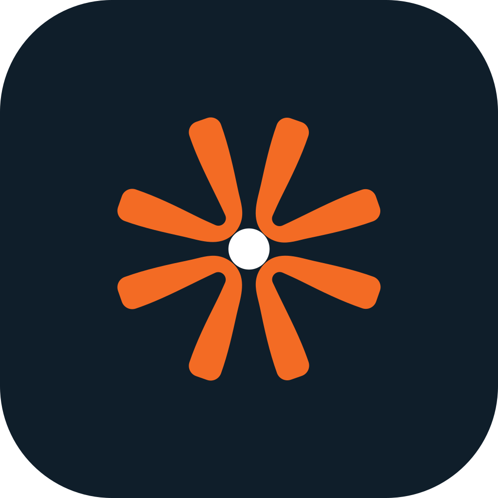
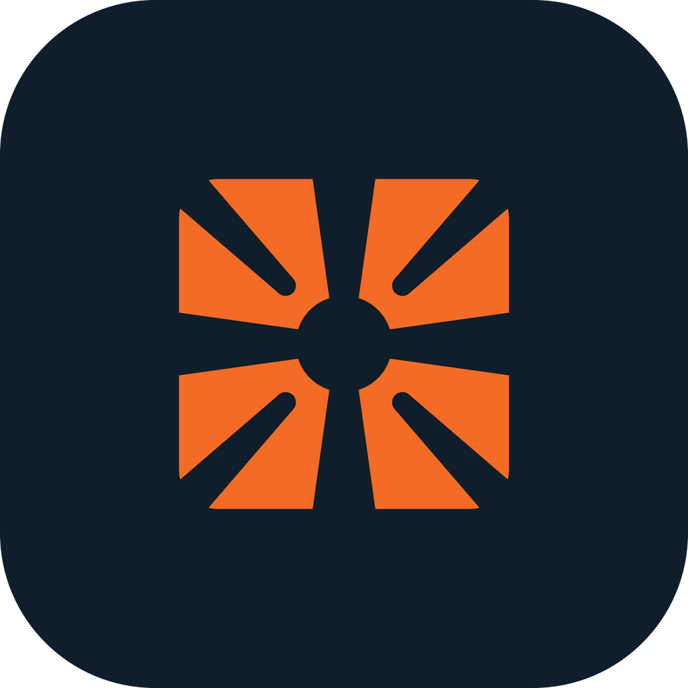
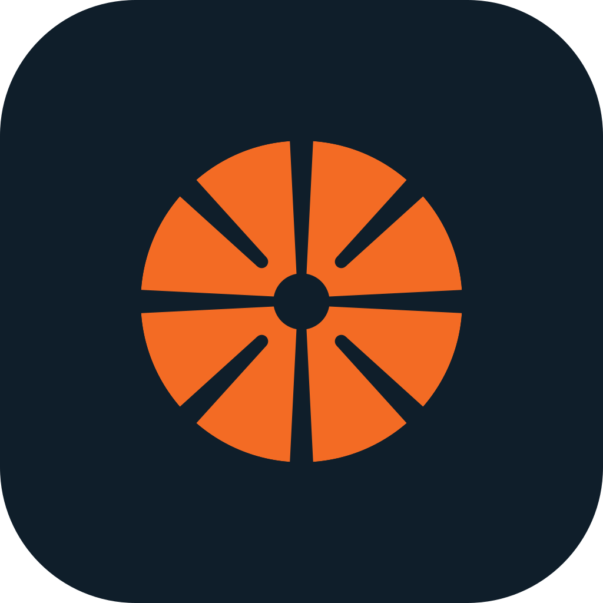

Symbol
concepts
concepts
Proposals only. None of these replaces the master artwork until NCL approves it.
For review · October 2026
Next to the wordmark the logo is clearly New City Light. On its own (app icon, avatar, favicon) an orange radiating star with an empty centre looks like the “spark” marks used by several tech and AI brands. Most people see the symbol alone at small sizes, so that is where the likeness matters most.
The master plus six alternatives. Each one is shown with its navy icon at 64, 32 and 16 px. Judge them at the smallest size first: that is where the problem is.

No change to the shape, so every existing file, the stamp and the pattern stay valid. Colour does most of the work on screens and in full-colour print. In one-colour uses (stamp, embossing) the shape is unchanged, so the likeness stays there.

A solid dot fills the empty centre: a light source the petals radiate from. Smallest possible change.
Tiny change; keeps all existing artwork recognisable. Gives the symbol a clear meaning: a light source.
Still an eight-ray starburst. Helps, does not solve.
Built from the master petal geometry with no redrawing. A designer should refine curves, weights and spacing before anything is final.
Vertical petals in orange, horizontal petals in navy. Ties the symbol to the wordmark colour; no single-colour spark reads like this.
Navy ties the symbol to the wordmark. Same geometry, so every existing application still works.
Only works in colour. One-colour uses (stamp, embossing, bag) fall back to the master.
Built from the master petal geometry with no redrawing. A designer should refine curves, weights and spacing before anything is final.
One petal from each pair, in rotation. Four blades read as motion and a turbine, not a spark.

Clear break. Reads as motion, energy, a turbine.
Can read as a fan, which is the wrong product for a lighting company. Thin bases at small sizes.
Built from the master petal geometry with no redrawing. A designer should refine curves, weights and spacing before anything is final.
Only the vertical petals: light thrown up and down like a wall washer. Strong silhouette at favicon size.

Bold, simple silhouette; survives a 16 px favicon.
Loses the radiance of the original. Can read as an hourglass or an “X”.
Built from the master petal geometry with no redrawing. A designer should refine curves, weights and spacing before anything is final.
Top half of the symbol over a horizon bar: light rising over the city. Closest to “Lighting the Way”.
Most on-message: light rising over the city, “Lighting the Way”. Distinctive in the lockup.
Wide, not square, so weaker as an app icon. Sunrise marks are common in other sectors.
Built from the master petal geometry with no redrawing. A designer should refine curves, weights and spacing before anything is final.
The master symbol held inside a thin ring, like a luminaire seen from below. Encloses the mark so it stops reading as a loose spark.
Encloses the mark so it becomes a badge, like a luminaire seen from below. Good for seals and signage.
The ring disappears at favicon size, where the likeness is worst.
Built from the master petal geometry with no redrawing. A designer should refine curves, weights and spacing before anything is final.
Built from the reference boards: petals cut out of a circle or rounded square by straight gaps, with a round U joining each pair and an open centre. A closed outline reads as a badge, not a loose spark: the furthest move from the current look. The references are other studios’ work; these use their principles, not their marks.






Eight petals cut from a disc, joined in four U-shaped pairs around a round opening. Reads as a lens or a downlight seen from below.
A closed circle reads as a badge, not a loose spark. Looks like a lens or a downlight from below, so it means lighting. Keeps NCL’s eight petals in four pairs.
Segmented-circle marks are a current trend, so it needs refining to feel like NCL’s own. Can read as a camera shutter.
New geometry: a circle or square cut by parametric gaps. A starting point, not artwork; a designer should set final proportions, gap widths and corner rounding.
The same cut from a rounded square: a lit window, a city block. Squares sit well next to the wordmark and on an app tile.
Square silhouette fills an app tile and matches the blocky wordmark. Suggests a lit window or a city block: the “City” in the name.
Less radiant than the circle. At 16 px it can read as a plain window or grid icon.
New geometry: a circle or square cut by parametric gaps. A starting point, not artwork; a designer should set final proportions, gap widths and corner rounding.
Heavier: narrow cuts and a small opening, so the mark reads as one solid badge. Strongest at 16 px; prints well as a stamp.
The most solid version: clearest at 16 px, prints cleanly as a stamp or embossing.
Heaviest and least like light. Can read as a pie, a fan or an air vent.
New geometry: a circle or square cut by parametric gaps. A starting point, not artwork; a designer should set final proportions, gap widths and corner rounding.
Twelve petals in six pairs. More radiance, closer to a light source; still a closed circle, not a loose spark.
The most radiant of the closed marks: a light source seen head-on.
Twelve cuts fill in below 32 px. Sun marks are common in solar and energy, which is close to NCL’s market.
New geometry: a circle or square cut by parametric gaps. A starting point, not artwork; a designer should set final proportions, gap widths and corner rounding.
Keep the navy icon (done). Then pick one of two routes, depending on how far NCL wants to move. The geometric direction is the stronger fix.
Lowest risk. Same symbol, recoloured. No reprint of one-colour items (stamp, bag). Business cards, signage and digital pick it up at the next print run.
A real break that keeps NCL’s eight petals in four pairs. Aperture says lighting; Window says city and suits the app tile. Needs a designer’s pass, new lockups and a full artwork update, so it is only worth it if NCL is early in the rollout.